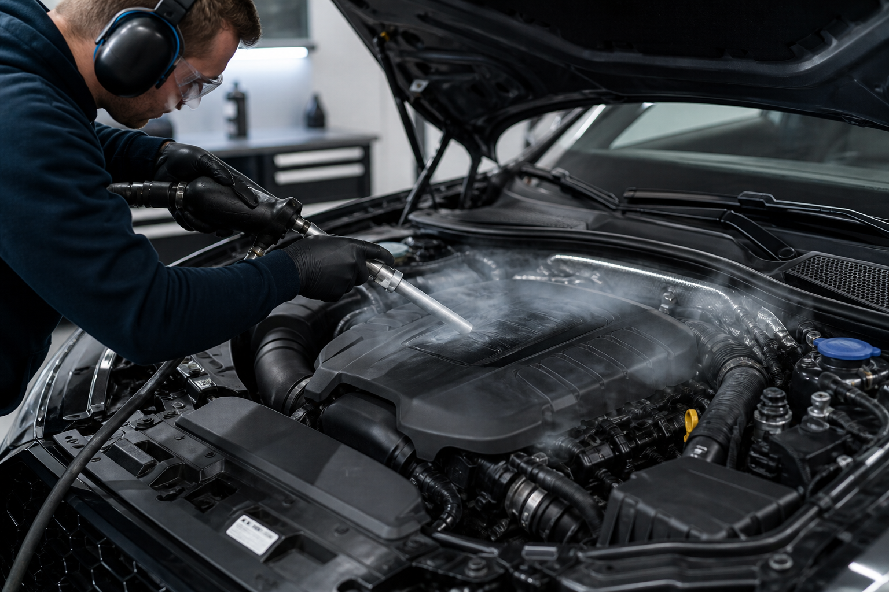

Trockeneis-Wissen · Fahrzeug
Motorraum Trockeneisstrahlen: Sicher reinigen ohne Elektronikschäden

Kaum ein Bereich am Fahrzeug ist so heikel zu reinigen wie der Motorraum. Öl, Fett, Straßenstaub und Ruß setzen sich über Jahre an Motorblock, Verkleidungen und Leitungen ab – gleichzeitig sitzen dort empfindliche Sensoren, Steckverbindungen und das Steuergerät. Trockeneisstrahlen macht es möglich, gründlich zu reinigen, ohne die Elektronik zu gefährden.
Warum der Motorraum eine besondere Herausforderung ist
Moderne Fahrzeuge sind im Motorraum vollgepackt mit Sensorik: Lambdasonden, Temperaturfühler, Drucksensoren, unzählige Steckverbindungen und ein zentrales Steuergerät, das die gesamte Motorsteuerung übernimmt. All diese Komponenten reagieren empfindlich auf Feuchtigkeit. Wasser oder Dampf, die in Steckverbindungen oder Gehäuse eindringen, können Kurzschlüsse, Korrosion an Kontakten oder sogar dauerhafte Fehlfunktionen verursachen – Probleme, die sich mitunter erst Wochen später als sporadische Fehlermeldungen bemerkbar machen.
Gleichzeitig verbinden sich Öl, Fett und Staub im Motorraum zu einer hartnäckigen, oft klebrigen Schicht, die sich mit einfachem Abwischen kaum entfernen lässt. Genau hier braucht es ein Reinigungsverfahren, das kraftvoll genug ist, um Verschmutzungen zu lösen, aber gleichzeitig so schonend, dass Elektronik und Kunststoffbauteile unangetastet bleiben.
So läuft die Motorraumreinigung mit Trockeneis ab
- 01Zustandsaufnahme. Wir prüfen den Motorraum, identifizieren empfindliche Bauteile wie offene Steckverbindungen, Sensoren und das Steuergerät.
- 02Abdeckung sensibler Komponenten. Besonders empfindliche oder offen liegende Elektronikteile werden zusätzlich geschützt, bevor gestrahlt wird.
- 03Trockeneisstrahlen. Mit fein dosiertem Druck werden Öl, Fett, Ruß und Staub von Motorblock, Verkleidungen und Leitungen gelöst – ohne mechanischen Abrieb und ohne Feuchtigkeit.
- 04Sofort startklar. Da keine Nässe zurückbleibt, kann der Motor direkt nach der Reinigung wieder gestartet werden, ohne Trocknungszeit.
Warum Trockeneis der sicherste Weg für den Motorraum ist
Der entscheidende Vorteil von Trockeneisstrahlen liegt in seiner Trockenheit. Die CO₂-Pellets gehen beim Aufprall direkt vom festen in den gasförmigen Zustand über, ohne den Umweg über eine Flüssigkeitsphase. Es entsteht also keine Nässe, die in Steckverbindungen, Relais oder das Steuergerät eindringen könnte. Zusätzlich ist CO₂ selbst nicht elektrisch leitfähig, was das Risiko von Kurzschlüssen während des Reinigungsvorgangs weiter minimiert.
Hinzu kommt, dass Trockeneisstrahlen nicht abrasiv wirkt. Kabelisolierungen, Kunststoffabdeckungen, Lackierungen und Dichtungen im Motorraum werden nicht angegriffen, während sich hartnäckige Öl- und Fettschichten zuverlässig lösen. Das macht das Verfahren gerade bei modernen, elektroniklastigen Motoren einer Dampf- oder Wasserreinigung deutlich überlegen.
Vorteile der Motorraumreinigung mit Trockeneis im Überblick
- Kein Kurzschlussrisiko: Trocken und nicht leitfähig, sicher für Sensoren und Steuergeräte.
- Materialschonend: Kabel, Kunststoffe und Dichtungen bleiben unbeschädigt.
- Sofort einsatzbereit: Keine Trocknungszeit, der Motor kann direkt wieder laufen.
- Gründlich: Löst auch hartnäckige Öl- und Fettschichten zuverlässig.
- Keine Chemie: Kein Einsatz von Entfettern oder Lösungsmitteln notwendig.
Ein sauberer Motorraum ohne Risiko für die Elektronik – das ist mit Trockeneisstrahlen kein Widerspruch, sondern Standard.
Typische Einsatzfälle
Motorraumreinigung mit Trockeneis ist besonders gefragt, wenn ein Fahrzeug für den Verkauf, eine Ausstellung oder ein Oldtimer-Treffen aufbereitet werden soll und der Motor optisch überzeugen muss. Werkstätten setzen das Verfahren auch vor größeren Reparaturen ein, damit Öl- und Fettschichten die Fehlersuche nicht erschweren. Und bei klassischen Fahrzeugen mit historischer, oft empfindlicher Motorentechnik ist Trockeneisstrahlen häufig die einzige Reinigungsmethode, die ohne Risiko für Originalteile infrage kommt.
Was kostet eine Motorraumreinigung mit Trockeneis?
Die Kosten für eine Motorraumreinigung mit Trockeneis hängen von mehreren Faktoren ab: dem Verschmutzungsgrad, der Fahrzeuggröße und davon, ob zusätzliche Abdeckarbeiten für besonders empfindliche Bauteile notwendig sind. Ein leicht verschmutzter Motorraum eines Alltagsfahrzeugs ist in der Regel schneller gereinigt als ein Oldtimer-Motor mit jahrzehntealten Öl- und Fettablagerungen. Auch die Zugänglichkeit spielt eine Rolle: Bei manchen Modellen müssen Abdeckungen oder Verkleidungen zunächst entfernt werden, um alle Bereiche zu erreichen.
Powertech Performance erstellt nach einer kurzen Sichtung des Fahrzeugs ein individuelles, unverbindliches Angebot – entweder anhand von Fotos, die per WhatsApp geschickt werden, oder direkt vor Ort. So weißt du vorab genau, mit welchem Aufwand und welchen Kosten zu rechnen ist, bevor die Reinigung beginnt.
Motorraumreinigung als Teil der Fahrzeugpflege
Ein sauberer Motorraum ist mehr als reine Optik. Wer regelmäßig unter die Motorhaube schaut, erkennt Leckagen, poröse Schläuche oder beginnenden Rost deutlich früher, wenn der Motorraum nicht von einer dicken Öl- und Staubschicht verdeckt ist. Gerade vor dem Werkstattbesuch oder der Hauptuntersuchung erleichtert ein gereinigter Motorraum die Fehlersuche und macht Undichtigkeiten sofort sichtbar. Für Werkstätten, die Fahrzeuge zum Verkauf vorbereiten, ist die Trockeneisreinigung des Motorraums daher oft ein fester Bestandteil der Aufbereitung, direkt neben Innenraum- und Lackreinigung.
Kombiniert mit einer Unterboden-Trockeneisstrahlen-Behandlung lässt sich ein Fahrzeug so von zwei besonders kritischen Bereichen aus technisch und optisch aufwerten – schnell, rückstandsfrei und ohne Risiko für empfindliche Bauteile.
Regelmäßige Pflege statt einmaliger Aktion
Ein einmal gründlich gereinigter Motorraum bleibt länger sauber, wenn kleinere Verschmutzungen frühzeitig entfernt werden, statt sich über Jahre zu einer dicken Kruste zu verdichten. Für Werkstätten und Flottenbetreiber empfiehlt sich deshalb, die Trockeneisreinigung fest in wiederkehrende Wartungsintervalle einzuplanen – so bleibt der Aufwand pro Einsatz gering und der Motorraum dauerhaft in einem Top-Zustand.
Warum Powertech Performance aus Erfurt
Powertech Performance aus Erfurt reinigt Motorräume mit dem nötigen technischen Verständnis für moderne wie klassische Fahrzeugtechnik. Geschäftsführer Benjamin Lemmer und sein Team wissen genau, welche Bauteile besonderen Schutz brauchen, und passen Druck und Vorgehensweise entsprechend an. Der Service ist mobil verfügbar im Umkreis von bis zu 100 Kilometern um Erfurt – alternativ kann das Fahrzeug auch direkt vor Ort bei Powertech Performance vorgeführt werden. So wird jeder Motorraum individuell und sicher gereinigt.
Häufige Fragen zum Motorraum Trockeneisstrahlen
Ist Trockeneisstrahlen im Motorraum sicher für Elektronik und Steuergeräte?
Ja. Trockeneis sublimiert beim Aufprall sofort zu gasförmigem CO₂, es bleibt kein Wasser oder feuchter Rückstand zurück. Dadurch besteht keine Gefahr von Kurzschlüssen an Sensoren, Steckern, Kabelbäumen oder dem Steuergerät.
Warum ist Trockeneisstrahlen besser als Dampfreinigung im Motorraum?
Dampf- und Wasserreinigung bringen Feuchtigkeit in Steckverbindungen und elektrische Komponenten, was Korrosion und Fehlfunktionen begünstigen kann. Trockeneisstrahlen arbeitet vollständig trocken und ist daher deutlich risikoärmer für moderne, elektroniklastige Motorräume.
Für welche Fahrzeuge eignet sich die Motorraumreinigung mit Trockeneis?
Das Verfahren eignet sich für nahezu alle Fahrzeuge, von modernen Alltagsfahrzeugen mit viel Sensorik bis zu Oldtimern mit historischen Motoren, sowie für Werkstätten, die Fahrzeuge vor dem Verkauf oder für Ausstellungen aufbereiten.